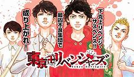
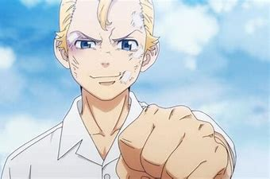
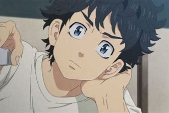
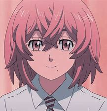
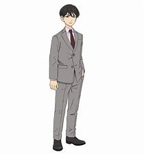
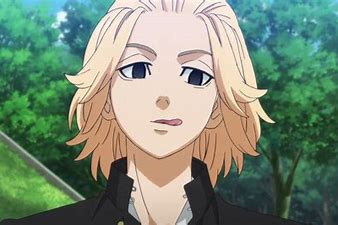

その1 東京リベンジャーズ

内容
- 東京リベンジャーズ 作者：和久井健 ジャンル：ヤンキー、サスペンス、SF
- あらすじ：不良だった主人公花垣武道がひょんなことから中学時代（12年前）へのタイムリープ能力に目覚めたことを機に、
かつての恋人である橘日向が殺害される運命を変えるべく元凶となる暴走族チーム東京卍會で成り上がる姿を描いたサスペンス作品
登場人物
- 花垣武道（通称：タケミッチ）
- 現代（未来）では26歳のフリーター。ある日電車に惹かれかけた日を境にタイムリープ能力を身に付ける。
若いころは東京一の不良を目指していた。喧嘩は弱いが、何事にも折れない強い精神力が強みである。
当時の彼女は橘日向である。また、マイキーにも気に入られ「タケミッチ」と呼び名を付けた。
- ※左の画像は中学生（12年前）のタケミッチ、右の画像は現代のタケミッチ


- 橘日向（通称：ヒナ）
- 武道の中学生時代の唯一の彼女。東京リベンジャーズのヒロイン。優しくて明るい、正義感の強い女の子。
タイムリープ前の現代では、東京卍會の抗争に巻き込まれ死亡している。武道が落ち込んでいる時に励まし、武道の心の支えとなっている。

- 橘直人（通称：ナオト）
- ヒナの弟であり、現代で武道がタイムリープするためのトリガーとなっている。
比較的に真面目な性格で、現代ではヒナと同じく死亡していたが、中1の時にタイムリープした
武道と出会ったことで刑事を目指すようになり、現代では刑事として東京卍會を追っている。

- 佐野万次郎（通称：マイキー）
- 12年前の東京卍會総長である。無敵のマイキーと呼ばれ、彼に喧嘩で勝てるものは一人もいない。
その圧倒的強さとカリスマ性で東京卍會をまとめた。性格はとても仲間想いで、仲間を傷つけた相手には容赦しない。
亡き兄を心から慕っており、武道が兄と似ているため武道を気に入ることになった。

- 他にも多くのキャラクターがおり、皆カッコ良く推しが決められないキャラクターばかりである。
彼らの名言
おすすめする理由
- 東京リベンジャーズは現在アニメでも人気があり、漫画でももうすぐ完結するところにあります。
男でも惚れる名言が多く、感動し泣いちゃう部分もあります。ヒナを救い、東京卍會を変えるのために
諦めない不屈の闘志を持つタケミッチとその仲間の友情の絆にも惹かれます。まだまだ東京リベンジャーズの
キャラクターに感動させられる名言があると思うので、今後の展開に期待したいです。
ホームに戻る